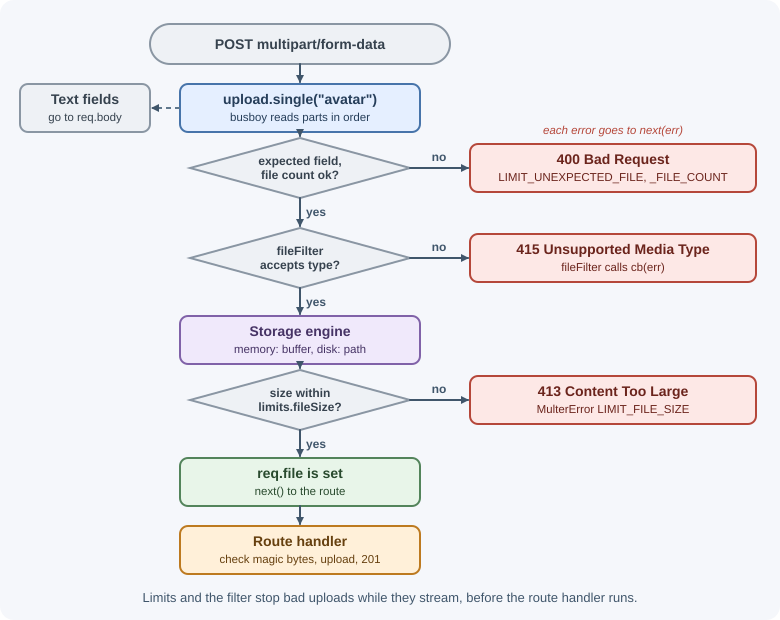
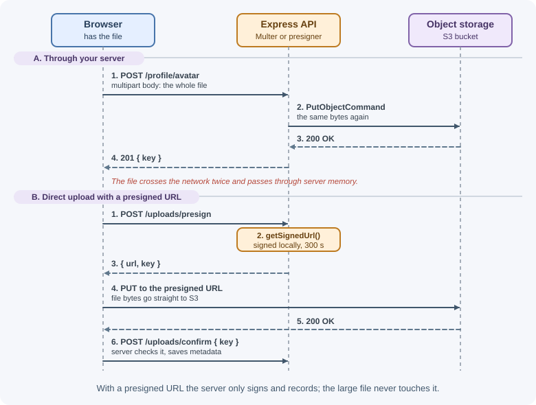

File Uploads with Multer¶
Browsers send files to a server as multipart/form-data requests, a format
that express.json() and express.urlencoded() cannot read. Multer is the
standard Express middleware for parsing these requests: it extracts the text
fields into req.body and the files into req.file or req.files. This
lesson covers Multer's storage engines, limits, filtering, error handling,
and how to upload files safely to object storage.
Why it matters¶
File uploads are one of the riskiest features in a web application. An unlimited upload can fill a disk or exhaust memory. A trusted filename can overwrite server files through path traversal. A file served back with the wrong content type can run scripts in users' browsers. Handling uploads well means controlling size, type, naming, and where files end up.
For the architecture side (object storage, presigned URLs, scanning pipelines), see file storage and uploads.
Real-world usage¶
- Amazon S3 supports uploads that never pass through your server. Its presigned URL guide explains that a presigned URL "will allow an upload without requiring another party to have AWS security credentials or permissions": the server signs, the client uploads directly. This is the pattern shown later in this lesson.
- Slack moved its file-upload API to a two-step design. Its
files.getUploadURLExternalmethod returns an upload URL and a file ID; the client sends the bytes to that URL and then callsfiles.completeUploadExternalto finalize the upload. Separating "send bytes" from "register the file" is the same idea as presigned uploads. - Shopify uses staged uploads for product images, videos, and 3D
models. The
stagedUploadsCreatemutation generates secure, temporary upload URLs; the app uploads files directly to them and then creates the assets that reference the uploaded files.
Popular tools and providers: Multer and busboy for parsing in Express,
file-type for magic-byte checks; object storage such as Amazon S3, Google
Cloud Storage, Azure Blob Storage, and Cloudflare R2.
How it works¶
What a multipart request looks like¶
POST /profile/avatar HTTP/1.1
Content-Type: multipart/form-data; boundary=----X9f2
------X9f2
Content-Disposition: form-data; name="displayName"
Ada
------X9f2
Content-Disposition: form-data; name="avatar"; filename="me.png"
Content-Type: image/png
<binary bytes of the PNG>
------X9f2--
Each part is separated by a boundary string. A part has its own headers:
name is the form field name, filename is the name on the user's
computer, and Content-Type is what the browser claims the file is. Multer
streams through these parts using the busboy parser.
A browser form needs enctype="multipart/form-data"; with fetch, pass a
FormData object and let the browser set the Content-Type header,
including the boundary.
Setting up Multer¶
import multer from "multer";
const upload = multer({ storage, limits, fileFilter });
upload is a factory; you call one of its methods to get route-level
middleware:
| Method | Accepts | Result |
|---|---|---|
upload.single("avatar") |
One file in field avatar |
req.file |
upload.array("photos", 5) |
Up to 5 files in field photos |
req.files (array) |
upload.fields([{ name: "front", maxCount: 1 }, { name: "back", maxCount: 1 }]) |
Files in several named fields | req.files (object of arrays) |
upload.none() |
Text fields only | Error if any file is sent |
upload.any() |
Files in any field | req.files (array); avoid in most apps |
Text fields always land in req.body. Apply Multer only on the routes that
accept uploads, never globally with app.use(): a global upload middleware
lets any route receive files.
The file object¶
| Property | Meaning |
|---|---|
fieldname |
The form field name |
originalname |
Filename from the user's computer: untrusted |
mimetype |
Content type claimed by the client: untrusted |
size |
Size in bytes |
buffer |
File contents (memory storage only) |
destination, filename, path |
Where it was saved (disk storage only) |
Storage engines¶
Memory storage keeps each file as a Buffer in file.buffer. It is
simple and good when you immediately send the file elsewhere (to S3, or an
image processor), but every concurrent upload consumes RAM, so always pair it
with a small fileSize limit.
Disk storage writes files to a folder. You control the folder and the filename:
const storage = multer.diskStorage({
destination: (req, file, cb) => cb(null, "uploads/tmp"),
filename: (req, file, cb) => cb(null, `${crypto.randomUUID()}.upload`),
});
If you pass only dest: "uploads/", Multer saves files with random names and
no extension, which is a safe default.
Limits¶
limits stops oversized or abusive requests while they stream:
| Limit | Meaning |
|---|---|
fileSize |
Maximum bytes per file |
files |
Maximum number of files |
fields |
Maximum number of text fields |
fieldSize |
Maximum bytes per text field value |
parts |
Maximum total parts (files + fields) |
Apart from fieldSize (1 MB), these limits default to unlimited
(Infinity), so a Multer instance without limits accepts files of any
size and number.
When a limit is exceeded, Multer stops and passes a MulterError to next()
with a code such as LIMIT_FILE_SIZE, LIMIT_FILE_COUNT, or
LIMIT_UNEXPECTED_FILE (a file in a field you did not declare).
Filtering file types¶
fileFilter(req, file, cb) runs before a file is stored. Call
cb(null, true) to accept, cb(null, false) to silently skip, or
cb(error) to reject the request.
The MIME type is only a claim
file.mimetype comes from the client and can be anything. A filter on it
blocks honest mistakes, not attackers. For real verification, inspect
the file's first bytes (its magic bytes) after upload, for example
with the file-type package, and reject files whose actual type is not
allowed. Image files can also be re-encoded with an image library, which
removes hidden payloads and metadata.
Note that fileFilter only sees req.body fields that appeared before
the file in the form, because the request is streamed in order.
Putting the pieces together, each file part passes these checks in order:

When to use and when not to use¶
Upload through Express with Multer when:
- Files are small (avatars, attachments of a few megabytes) and you want to validate, resize, or scan them before storing.
- The upload is part of a form submission that also carries text fields.
- You need full control over the bytes on the server (for example, to strip image metadata).
Prefer direct-to-storage uploads (presigned URLs) when:
- Files are large (videos, archives) or users are on slow connections: the upload would occupy a server connection, and a slow upload can run into Node's 5-minute default request timeout.
- Upload volume is high and you do not want app servers paying for the bandwidth twice (client → server → storage).
| Approach | Bytes pass through your server | Good for | Watch out for |
|---|---|---|---|
Multer memoryStorage |
Yes, held in RAM | Small files you forward or process immediately | Memory per concurrent upload; always set fileSize |
Multer diskStorage |
Yes, written to local disk | Larger files processed on the same machine | Disk filling up; files lost when instances are replaced |
Streaming to storage (custom engine or busboy) |
Yes, streamed | Medium files without buffering | More code; still uses server bandwidth |
| Presigned URL to object storage | No | Large or numerous files | Bucket CORS setup; validate the file after upload |
Practical examples¶
Single image upload with limits and a filter¶
import express from "express";
import multer from "multer";
const app = express();
const ALLOWED_TYPES = new Set(["image/png", "image/jpeg", "image/webp"]);
function imageFilter(req, file, cb) {
if (ALLOWED_TYPES.has(file.mimetype)) return cb(null, true);
const err = new Error("Only PNG, JPEG, or WebP images are allowed");
err.status = 415;
cb(err);
}
const upload = multer({
storage: multer.memoryStorage(),
limits: { fileSize: 2 * 1024 * 1024, files: 1 }, // 2 MB, one file
fileFilter: imageFilter,
});
app.post("/profile/avatar", upload.single("avatar"), (req, res) => {
if (!req.file) return res.status(400).json({ error: "No file uploaded" });
res.status(201).json({
displayName: req.body.displayName,
size: req.file.size,
type: req.file.mimetype,
});
});
Test it with curl:
curl -F "displayName=Ada" -F "avatar=@me.png" http://localhost:3000/profile/avatar
{"displayName":"Ada","size":48213,"type":"image/png"}
Several files and named fields¶
// The single-file instance above has `files: 1`, which would reject these
// routes with LIMIT_FILE_COUNT, so they get their own instance.
const multiUpload = multer({
storage: multer.memoryStorage(),
limits: { fileSize: 2 * 1024 * 1024, files: 10 },
fileFilter: imageFilter,
});
app.post("/listings/:id/photos", multiUpload.array("photos", 10), (req, res) => {
res.json({ count: req.files.length });
});
const idUpload = multiUpload.fields([
{ name: "front", maxCount: 1 },
{ name: "back", maxCount: 1 },
]);
app.post("/verify-id", idUpload, (req, res) => {
const front = req.files.front?.[0];
const back = req.files.back?.[0];
if (!front || !back) return res.status(400).json({ error: "Both sides needed" });
res.sendStatus(202);
});
Handling Multer errors in the error handler¶
app.use((err, req, res, next) => {
if (err instanceof multer.MulterError) {
const status = err.code === "LIMIT_FILE_SIZE" ? 413 : 400;
return res.status(status).json({ error: err.message, code: err.code });
}
if (err.status) return res.status(err.status).json({ error: err.message });
next(err); // anything else goes to the default handler
});
413 Content Too Large tells the client the file was too big; 415
Unsupported Media Type tells it the type is not accepted. See
error handling in Express for the full
pattern.
Verifying the real type with magic bytes¶
import { fileTypeFromBuffer } from "file-type";
// A separate instance: the image filter above would reject PDFs.
const pdfUpload = multer({
storage: multer.memoryStorage(),
limits: { fileSize: 10 * 1024 * 1024, files: 1 },
});
app.post("/documents", pdfUpload.single("document"), async (req, res) => {
if (!req.file) return res.status(400).json({ error: "No file uploaded" });
// Read the real type from the file's first bytes, not the client's claim
const detected = await fileTypeFromBuffer(req.file.buffer);
if (detected?.mime !== "application/pdf") {
return res.status(415).json({ error: "File is not a PDF" });
}
res.sendStatus(201);
});
Uploading to object storage (S3)¶
Servers usually should not keep uploads on their own disk: disks fill up and files are lost when instances are replaced. Send them to object storage:
import { S3Client, PutObjectCommand } from "@aws-sdk/client-s3";
const s3 = new S3Client({ region: process.env.AWS_REGION });
app.post("/profile/avatar", upload.single("avatar"), async (req, res) => {
const key = `avatars/${crypto.randomUUID()}`; // never the original name
await s3.send(new PutObjectCommand({
Bucket: process.env.UPLOAD_BUCKET,
Key: key,
Body: req.file.buffer,
ContentType: req.file.mimetype,
}));
res.status(201).json({ key });
});
For large files, a better pattern skips your server entirely: the server creates a short-lived presigned URL, and the browser uploads straight to storage.
import { getSignedUrl } from "@aws-sdk/s3-request-presigner";
app.post("/uploads/presign", async (req, res) => {
const key = `uploads/${crypto.randomUUID()}`;
const url = await getSignedUrl(
s3,
new PutObjectCommand({ Bucket: process.env.UPLOAD_BUCKET, Key: key,
ContentType: "application/pdf" }),
{ expiresIn: 300 } // seconds
);
res.json({ url, key });
});

Serving uploaded files safely¶
import path from "node:path";
const UPLOAD_DIR = path.resolve("uploads");
app.get("/files/:id", requireLogin, async (req, res) => {
const file = await findFileRecord(req.params.id); // metadata from the DB
if (!file || file.ownerId !== req.user.id) return res.sendStatus(404);
res.set("X-Content-Type-Options", "nosniff");
// Force download instead of rendering in the browser.
res.download(file.storedName, file.displayName, { root: UPLOAD_DIR });
});
Look files up by an ID in your database, not by a path from the URL. The
root option makes Express refuse paths that escape the folder.
Best practices¶
- Apply Multer per route, never globally.
- Always set
limits, especiallyfileSizeandfiles. - Allow a short list of types and verify magic bytes for anything important.
- Generate your own storage names (UUIDs); keep the original name only as display metadata in the database.
- Store files outside the web root and outside the project folder, ideally in object storage.
- Prefer presigned URLs for large files so uploads do not tie up your server.
- Serve user files with
Content-Disposition: attachmentandX-Content-Type-Options: nosniff, ideally from a separate domain. - Scan uploads for malware when users share files with each other.
- Clean up temporary files when a request fails.
- Record metadata (owner, size, type, storage key) in the database.
In production¶
- The process crashes under upload traffic. Detect: memory graphs
climbing during uploads, containers restarted for exceeding their memory
limit, or
JavaScript heap out of memoryin logs. Cause:memoryStoragewith no or very highfileSizelimits, multiplied by concurrent uploads. Fix: setlimits, stream to disk or storage, or move large files to presigned uploads. - Large uploads fail with 413 before Express sees them. Detect: the 413
response is an HTML page from the proxy, not your JSON error; Express logs
show no request. Cause: a reverse proxy limit; Nginx's
client_max_body_sizedefaults to1m. Fix: raise it for upload routes only, and keep Multer'sfileSizeas the real application limit. - Disk full errors. Detect:
ENOSPC: no space left on devicein logs and failed writes across the app. Cause:diskStoragetemporary files that are never deleted when a request fails or after processing. Fix: delete files in afinallyblock or error handler, run a cleanup job, or avoid local disk. - Files "disappear" after a deploy or exist only on one instance. Detect: 404s for files that were uploaded successfully, often only on some requests behind a load balancer. Cause: files saved to local disk on one server, which is replaced or not shared. Fix: store files in object storage and keep only the key in the database.
- Browser uploads to presigned URLs fail. Detect: a CORS error in the
browser console, or an S3 error response with code
SignatureDoesNotMatch. Cause: the bucket has no CORS rule allowingPUTfrom your origin, or the client sent headers (such asContent-Type) that differ from what was signed. Fix: add a bucket CORS configuration and send exactly the signed headers.
Important terminology¶
- multipart/form-data: A request body format that carries text fields and files as separate parts.
- Boundary: The delimiter string that separates parts.
- Storage engine: Multer's strategy for where file data goes (memory or disk, or a custom engine).
- Magic bytes: Signature bytes at the start of a file that identify its real format.
- Path traversal: Using
../in a path to reach files outside the intended folder. - Presigned URL: A time-limited URL that grants permission for one storage operation.
- Object storage: A service such as Amazon S3 that stores files as objects addressed by keys.
Common mistakes and misconceptions¶
- Expecting
express.json()to parse uploads. It ignores multipart bodies;req.filestaysundefinedwithout Multer. - Setting
Content-Typemanually withFormData. The browser must add the boundary; setting the header yourself breaks the request. - Trusting
originalname. It can contain../, odd characters, or a misleading extension. - Trusting
mimetype. A script can be sent asimage/png. - Using memory storage without a size limit. A few large uploads can crash the process.
- Field name mismatch.
upload.single("avatar")with a form field namedfilecauses aLIMIT_UNEXPECTED_FILEerror. - Serving uploads with
express.staticfrom a public folder. Users can upload HTML or SVG that runs scripts on your domain.
Revision questions¶
- Why can't
express.json()read a file upload? - When would you choose memory storage over disk storage?
- Why is checking
file.mimetypenot enough to verify a file's type? - How should a server respond when a file exceeds
fileSize, and why? - What are the advantages of uploading directly to storage with a presigned URL?
- Name three precautions when serving user-uploaded files back to users.